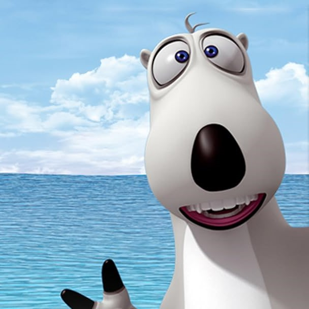

Beruang Kutub & Survivor

Nama : Bernard
Spesies : Beruang Kutub
Karakteristik : Lucu, Sering Sial, Pemberani
Saya adalah seekor beruang kutub penasaran yang suka menjelajahi berbagai tempat dan mencoba berbagai hal baru, meskipun sering berujung pada kejadian yang mengocok perut.
Saya memiliki keahlian dalam bertahan hidup di lingkungan ekstrem sekaligus menghibur penonton dengan aksi kocak saya.